Le Déneigeur
Le DéneigeurLe logiciel du déneigeur, dans la poche du manteau.
Vos clients, votre tournée, vos factures et votre argent à recevoir, sur le cellulaire et au bureau. Pensé pour la tempête : gros boutons qu'on touche avec des gants, et ça fonctionne même sans réseau.
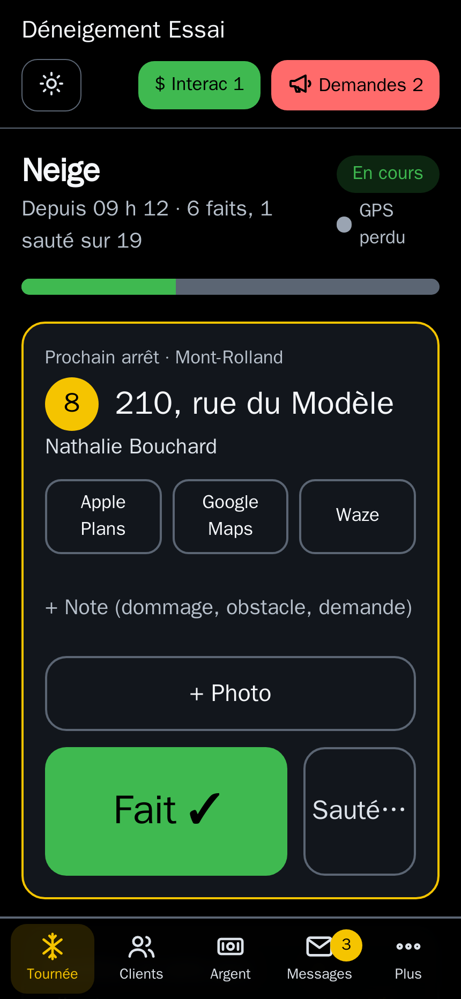
Ce que Le Déneigeur fait pour vous
Fait au Québec, en français, pour les petites et moyennes entreprises de déneigement : celles qui tiennent encore leurs comptes sur papier, et celles qui veulent un outil plus simple.
Sur la route
La tournée
Vos arrêts dans votre ordre (on le change avec des gants : pas de glisser-déposer), l'adresse en gros, Fait ou Sauté d'une tape (avec 5 secondes pour annuler). Itinéraire vers Apple Plans, Google Maps ou Waze. Sans réseau, les passages partent tout seuls au retour du signal.
Les clients avisés
Avis par texto au début de la tempête et quand vous approchez de leur entrée. Moins d'appels, moins de voitures dans le chemin.
Photos et notes
Photo de l'entrée, photo avant ou après le passage, note de dommage ou d'obstacle. Tout reste dans la fiche du client, avec l'heure.
La météo
Les prévisions d'Environnement Canada pour votre secteur, centimètres de neige et avertissements en évidence, sur l'écran de tournée.
Les balises
À poser à l'automne, à retirer au printemps, dans l'ordre de la tournée. Une tape par adresse, le nombre de l'an passé proposé.
Pensé pour l'hiver
Gros boutons qu'on touche avec des gants, mode Nuit et mode Soleil très contrasté, s'ajoute à l'écran d'accueil comme une application.
L'argent
Les factures
Factures avec TPS et TVQ faites au cellulaire, numérotées, en PDF, envoyées par courriel ou par texto avec un lien. Les versements du contrat de saison se préparent tout seuls : vous les envoyez d'une tape.
Comptant et Interac
Paiement noté en passant, reçu envoyé au client. Les avis de virement Interac sont lus et proposés sur la bonne facture : vous confirmez d'une tape.
Les chèques postdatés
Notés en main pour chaque versement, rappelés le matin de leur date, déposés d'une tape. Un chèque retourné par la banque remet la facture à payer.
Les comptes à recevoir
Qui vous doit quoi, depuis quand. L'app vous propose les relances à faire (rappel, deuxième avis, dernier avis), facture jointe; rien ne part sans votre tape.
Le rapport pour le comptable
Ventes, TPS et TVQ perçues, argent reçu par mode, revenus par secteur : en PDF, ou en fichier pour Excel. État de compte d'un client en PDF.
Contrats et saison suivante
Contrat de saison en PDF, envoyé au client. Prix taxes comprises ramenés avant taxes. La saison suivante se prépare à partir de la précédente, avec un ajustement en pourcentage.
Les clients et le bureau
Les messages au même endroit
Textos et courriels de vos clients classés dans leur fiche, appels notés. Avis sur le cellulaire quand un client écrit. Envoi à tous vos clients ou à un secteur.
Les demandes
Un oubli, une plainte, un dommage : une demande à suivre jusqu'à ce qu'elle soit réglée. Pour un dommage : photos, entente de réparation, coût.
Aussi sur l'ordinateur
Le même logiciel s'ouvre en grand sur un ordinateur : fiche du client en deux colonnes, argent à recevoir à côté des comptes, et la carte en direct de la tournée (position du camion, trajet des dernières heures).
Vos réglages, à vous
Taxes, signature, dates des versements, secteurs, services et prix, villes desservies, avis aux clients : vous les changez vous-même.
Seul ou en équipe
Seul, vous faites tout. En équipe, vous invitez vos employés par texto : ils suivent la tournée et marquent leurs passages; vous gardez la main sur les clients et l'argent.
Vos clients déjà dans l'app
On importe votre liste à partir d'un fichier Excel, de vos papiers, ou de l'export de votre logiciel actuel : adresses, prix, soldes dus et montants déjà reçus.
Les écrans
Captures de l'application, avec des clients fictifs.
Sur le cellulaire
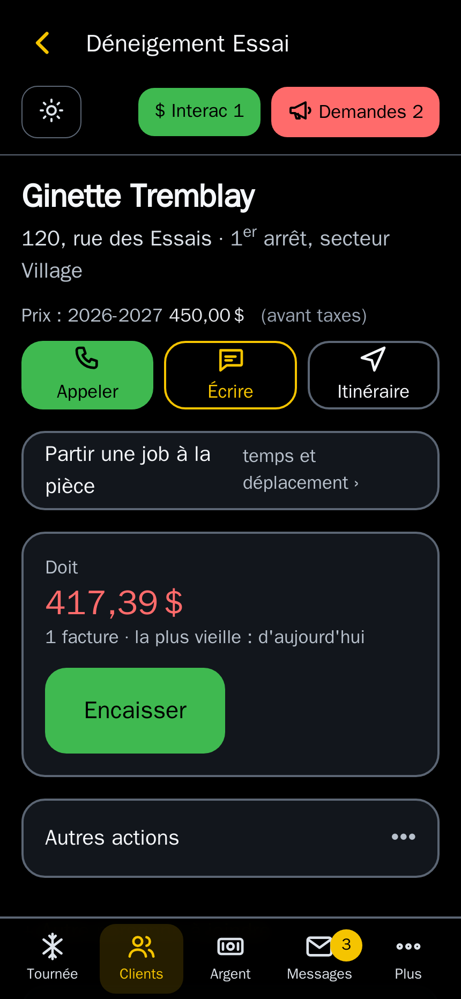
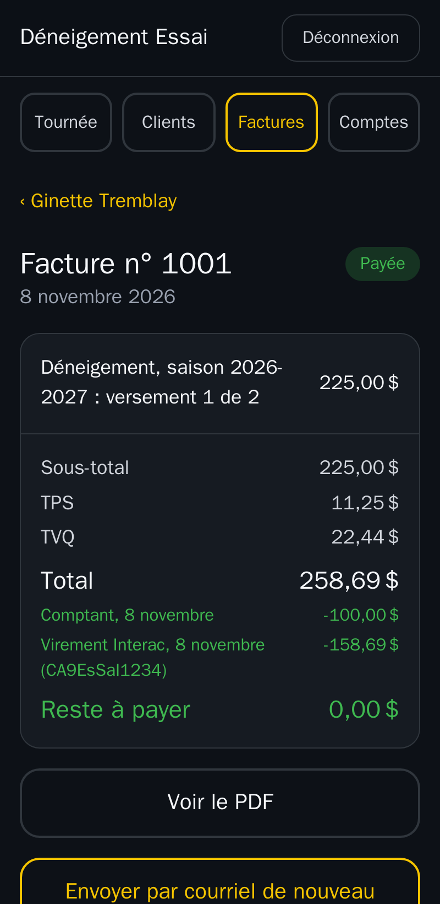
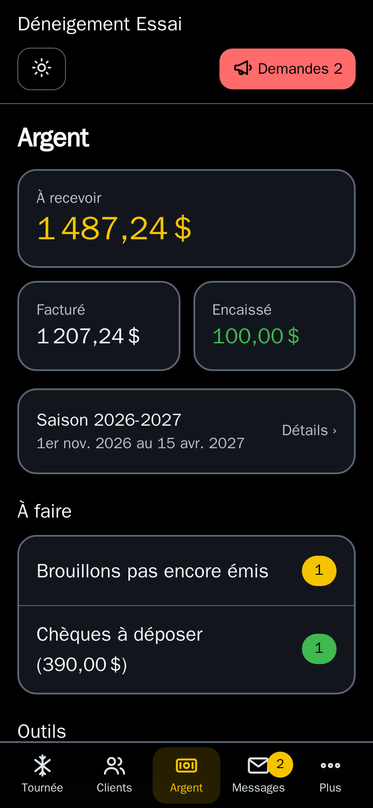
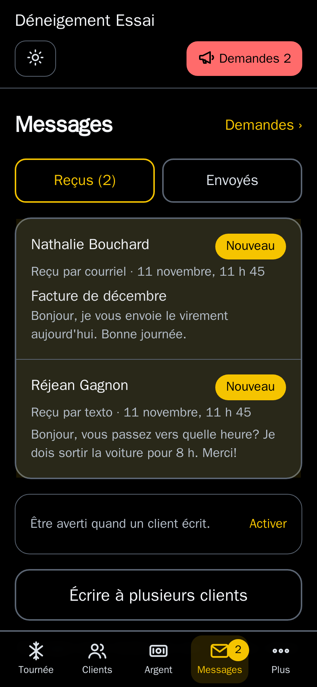
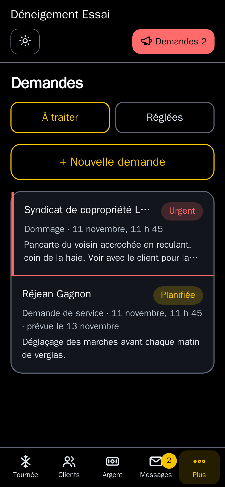
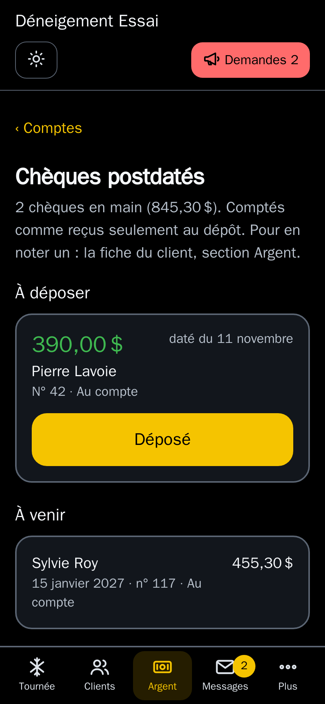
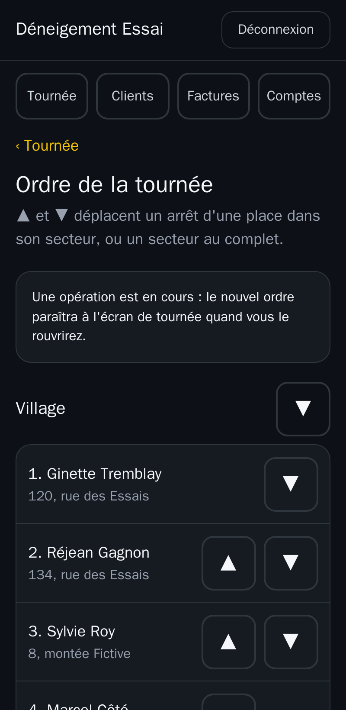
Au bureau
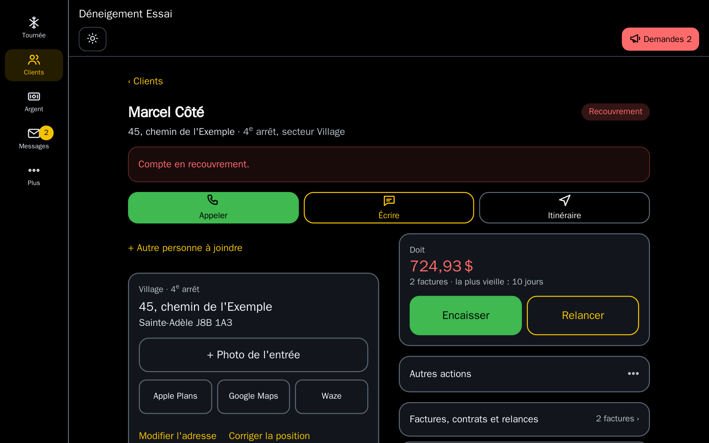
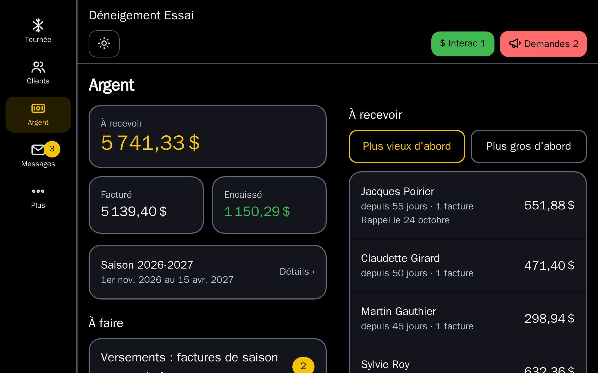
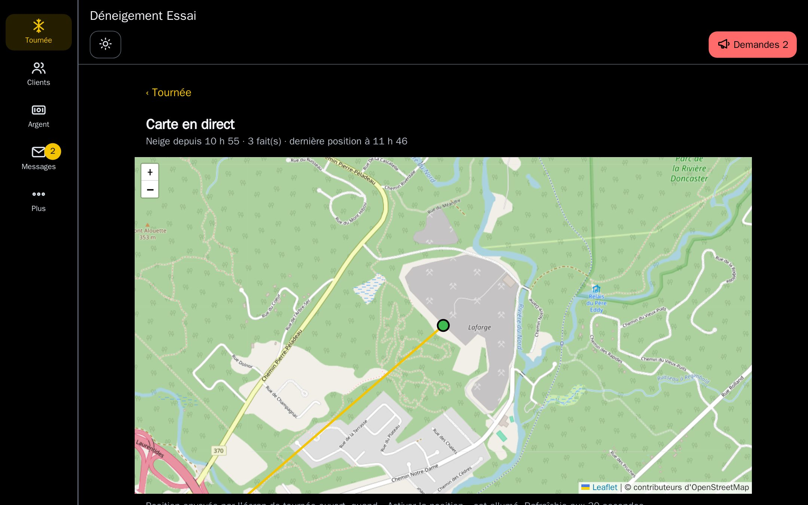
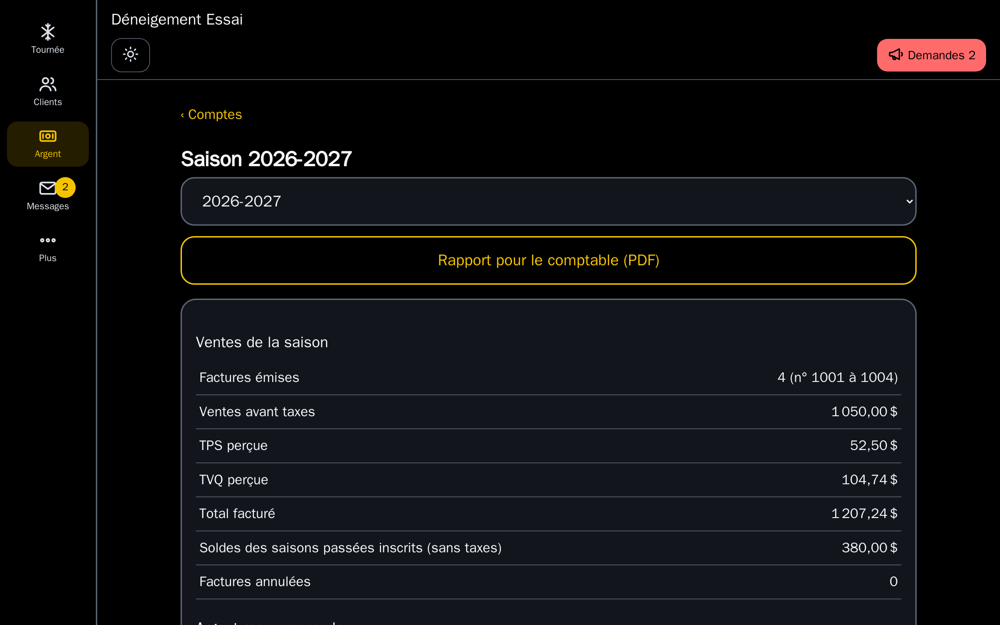
Le prix
Un abonnement au mois pour le logiciel complet, plus les textos échangés avec vos clients. Rien d'autre. Taxes en sus.
par mois, par entreprise
- Le logiciel complet, toutes les fonctions
- Un utilisateur compris, avec tous les droits (administrateur et opérateur)
- Votre adresse vous@ledeneigeur.com
- Mises à jour et sauvegardes comprises
- Des textos en bon français, avec les accents
- Vous voyez chaque mois ce que vous avez envoyé et reçu
Questions
Faut-il installer quelque chose?
Non. Le Déneigeur s'ouvre dans le navigateur du cellulaire et s'ajoute à l'écran d'accueil comme une application. Il fonctionne aussi sur un ordinateur.
Et s'il n'y a pas de réseau sur la route?
L'écran de tournée reste utilisable sans réseau. Les passages notés sont gardés dans le téléphone et envoyés dès que le signal revient, avec la bonne heure.
Mes clients vont-ils recevoir des textos de mon cellulaire personnel?
Non. Les textos partent d'un numéro d'affaires, et les réponses de vos clients arrivent dans l'application, dans leur fiche.
J'utilise déjà un autre logiciel. Je perds mes clients?
Non. Exportez votre liste de clients de votre logiciel actuel (Excel ou CSV) : on l'importe, adresses, téléphones, prix et soldes compris.
Combien de personnes peuvent l'utiliser?
Un utilisateur est compris dans l'abonnement. Chaque utilisateur de plus, opérateur (il fait la tournée) ou administrateur (il gère aussi les clients et l'argent), est à 25 $ par mois. Un accès en lecture seule (votre comptable, un associé qui veut suivre les comptes) est gratuit : il consulte, il ne change rien. Chaque personne a son propre compte.
Mes données sont-elles à moi?
Oui. Elles sont sauvegardées deux fois par jour, et vous pouvez en obtenir une copie complète.
Nous écrire
Une question, une démonstration avec vos propres données : écrivez-nous, on vous répond rapidement.
info@ledeneigeur.comOu par téléphone : 514 360-3227
SLAPP Technologies Inc.
204, rue Saint-Charles, bureau 103, Sainte-Thérèse (Québec) J7E 2B4